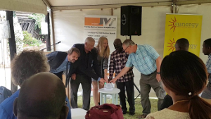

Als regionales Zentrum stellt das Missionskrankenhaus Karanda eine wichtige Gesundheitsversorgung zur Verfügung. Nicht nur aus der Umgebung, auch aus Harare reisen viele Patienten an, um bezahlbare Behandlungen und Operationen zu erhalten. Ein Photovoltaiksystem vor Ort ermöglicht die sichere Stromversorgung im Fall von Stromausfällen, ein automatischer Schalter vermeidet, dass das Licht während lebenswichtiger Operationen ausgeht. Darüber hinaus kann das Krankenhaus mindestens 2.500 EUR an Stromkosten pro Jahr einsparen.
Mit dem 14,3 kW Photovoltaiksystem wird ein Raspberry Pi Mini-Computer installiert, der die Produktionsdaten der Anlage dokumentiert und auf dem Blockchain basierten Regelwerk von Corrently hochlädt. Die Daten stehen dann online zur Verfügung. „Es ist schön zu sehen, dass das neuartige Stromprodukt Corrently, das schon heute Stromkunden in Deutschland zu unabhängigen Kleinstversorgern macht, nun auch in Afrika echte Werte schafft“ beschreibt Manuel Utz, Mitgründer der STROMDAO die technische Umsetzung.
Um leichten Zugang zur Pilotanlage inkl. Blockchain-Anschluss zu haben und die Technologie weiterzuentwickeln, wurde die zweite 3,2 kW Pilotanlage am Büro des Partners Sunergy in Harare installiert.
Am 19. Oktober 2018 war es endlich soweit, die beiden Anlagen wurden offiziell eingeweiht. Besonders stolz sind wir, dass neben den Vertretern der simbabwischen Wirtschaft und Politik auch Michael Kober von der Deutschen Energie Agentur dena und Herr Klaus Wunderlich, Kanzler der Deutschen Botschaft in Harare an der Eröffnung teilnahmen und gemeinsam mit Dave Mathews vom lokalen Partner Sunergy und Vivian Blümel von maxx-solar energy den maxx|Blockchain Hub feierlich in Betrieb genommen haben. Herr Kober lobte den Einsatz der maxx-solar in Afrika und meint, dass „der maxx|Blockchain Hub eine Innovation für Crowdfunding-Konzepte darstellt und auch über die Grenzen des Landes Simbabwe hinaus riesige Potentiale für den Photovoltaikmarkt bietet.“
Corrently ist der Stromtarif des Unternehmens STROMDAO. Er unterscheidet sich wesentlich von bisherigen Stromtarifen. Denn das bisherige Unterscheidungsmerkmal ist vor allem der Preis (Ökostrom ist meist der “Premiumstrom”). Doch ganz ehrlich: für den Kunden kommt der Strom aus der Steckdose. Was haben wir also anders gemacht mit unserem “Corrently” Stromtarif?
Bei angenommenen 50€ im Monat als Abschlag für Strom bekommt ein Stromkunde bisher als Gegenleistung Strom - easy as that. Die 50€ die er oder sie ausgegeben hat sind damit weg. Doch was wäre wenn der Stromkunde sich für die 50€ was kaufen könnte? Also etwas das er oder sie brauchen kann? Das ist die Grundidee hinter den Payback Punkten oder den Lufthansa Flugmeilen. Man bezahlt etwas (zum Beispiel ein Päckchen Butter oder einen Flug) und bekommt zusätzlich noch Punkte. Die wiederum kannt man einlösen. Warum gibt es das nicht für Strom? Ganz einfach: bisher war es viel zu teuer nachzuhalten was der Einzelne verbraucht hat (deshalb kommt der Mann fürs Ablesen deines Zählerstands auch nur einmal im Jahr ;)).
Wir ändern das! Was heißt das? Jeder kann den “Corrently-Stromtarif” abschließen. Sobald in der Strom fließt, bekommt man dann Corrently (=Strom-Bonus-Punkte). Und nun kannst man bei uns auf dem Marktplatz seine Bonuspunkte einlösen. Und zwar nicht wie bei Payback gegen eine Bratpfanne oder einen Wischmopp, sondern gegen einen Anteil an einem Solar- oder Windkraftpark. Die Anteilsscheine bekommst man nicht mit der Post oder als E-Mail, sondern als sog. “CORI-Token” auf sein Blockchain-Konto (=seine “Wallet”).
Was heißt das nun? Ganz einfach: Ihre Stromrechnung sinkt langfristig auf 0€ pro Jahr! Kein Scheiß! Warum? Nun Sie erwerben ja mit jedem Mal in dem du Corrently gegen Anlagenanteilsscheine (=CORI-Token) tauschen einen Anteil an einer Solar- oder Windanlage. Und die macht mit dem Strom den sie produziert natürlich Gewinn. Und da Sie Anteilsscheine haben bekommen Sie im Gegenzug auch einen Teil des Gewinns. Das ist heute schon ganz normal bei sog. Bürger-Windenergiebeteilugungen.
Der Corrently Stromtarif ermöglicht Ihnen diese Beteiligung von der Stromrechnung aus. Wir von der STROMDAO sind mit Corrently das Payback der Energiewirtschaft ;)
Es ist ebenfalls ganz einfach: weil wir Sinvolles mit Gutem verbinden wollen, haben wir gemeinsam mit unseren Partnern dieses Projekt umgesetzt.
In Deutschland ist der Corrently Stromtarif sinnvoll, da jeder Stromkunde somit zum Erzeuger wird. In Karanda kann jeder Corrently Besitzer Gutes tun indem er seine Corrently gegen Spendenscheine die ganz analog zu den Anteilsscheine an einer Erzeugungsanlage funtkionieren eintauschen kann. Dafür erhält man auch Token - nur sind diese eben Spendenscheine. Wird nun Strom im Missionskrankenhaus erzeugt ist das für jeden Token-Holder sichtbar.